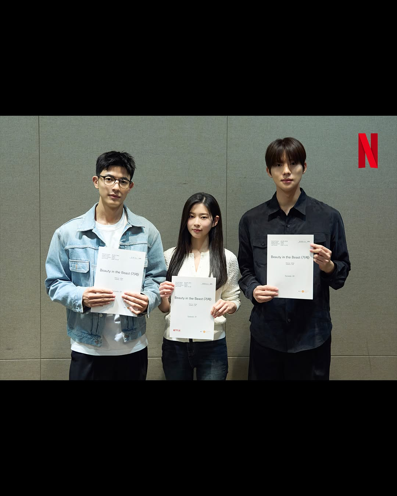
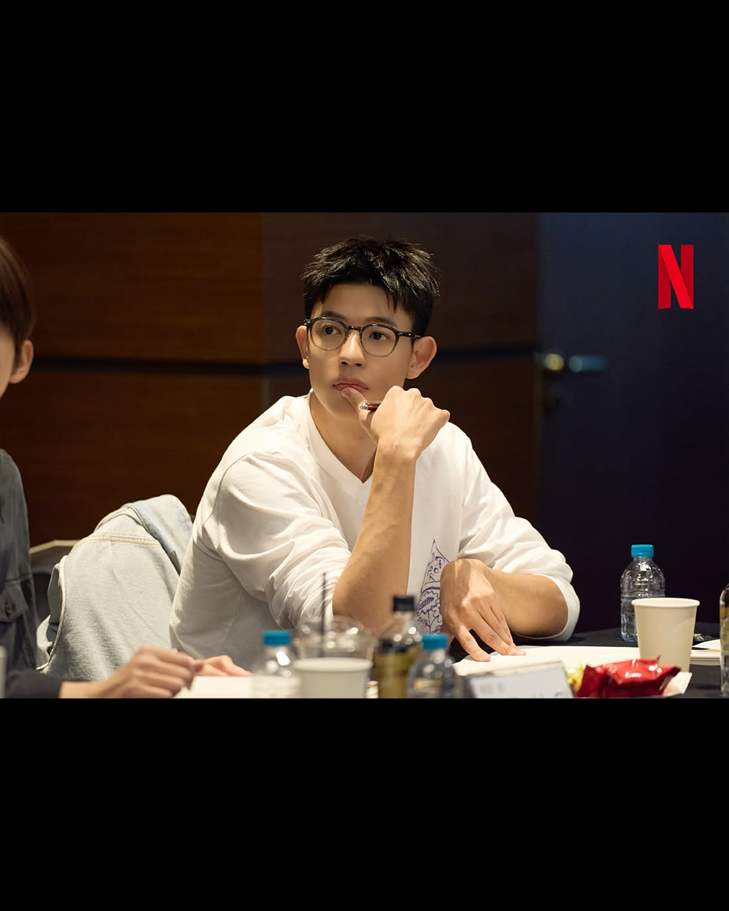
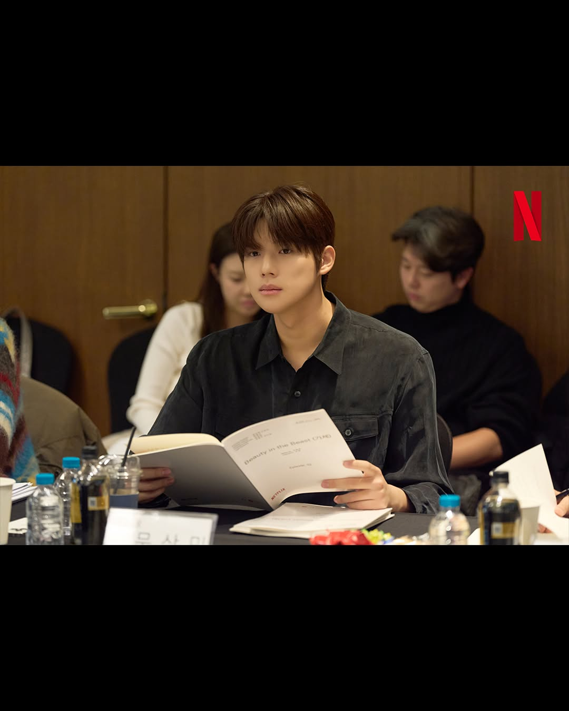

Netflix bagikan pembacaan naskah para pemeran untuk drama terbaru "Beauty in the Beast."
"Beauty in the Beast" adalah drama romantis fantasi remaja tentang Min Soo, yang menyembunyikan rahasia kemampuannya untuk berubah menjadi serigala, dan peristiwa yang terjadi ketika ia bertemu dengan seniornya di kampus, Hae Jun, dan seorang anak laki-laki manusia serigala bernama Do Ha.
Serial ini mengikuti kisah kampus yang kacau yang dimulai ketika Min Soo, seorang manusia serigala, memasuki perguruan tinggi. Setelah menghabiskan hidupnya menekan emosi dan perilakunya untuk menghindari berubah menjadi serigala, Min Soo dilatih dengan ketat sejak usia muda untuk beradaptasi dengan masyarakat dan sekarang menghadapi dunia baru saat ia memulai kuliah.
Drama ini disutradarai oleh Jin Hyuk, yang pernah menggarap "The Legend of the Blue Sea" dan "The Tale of Lady Ok," dengan naskah ditulis oleh Gin Han Sai yang pernah menggarap "Extracurricular" dan "Glitch."

Kim Min Ju akan memerankan Ha Min Soo, seorang gadis yang bisa berubah menjadi serigala. Karena kemampuan yang tidak boleh diketahui siapa pun, Min Soo menghabiskan hidupnya dengan menahan diri, namun ia tetap menjadi gadis yang penasaran dengan banyak hal yang ingin dilakukannya dan tempat-tempat yang ingin dikunjunginya, bermimpi tentang kehidupan biasa.
Lomon akan memerankan Do Ha, seorang manusia serigala yang berjiwa bebas. Do Ha, yang bertindak tanpa ragu-ragu ketika menginginkan sesuatu, merasa Min Soo, yang hidup dengan menekan emosinya, sangat menjengkelkan dan anehnya sulit untuk diabaikan.

Moon Sang Min akan memerankan Hae Jun, senior Min Soo di kampus. Meskipun kesan pertama membuatnya tampak mengintimidasi dengan ekspresi wajah yang cemberut dan mata yang tajam, Hae Jun memiliki sisi lembut yang membuatnya mendapat julukan "anak anjing besar". Meskipun biasanya acuh tak acuh terhadap orang lain, Min Soo, yang bertingkah aneh setiap kali berada di dekatnya, terus menarik perhatiannya karena alasan yang tidak dapat dijelaskannya.

~~
Source:
Netfixkr /Soompi